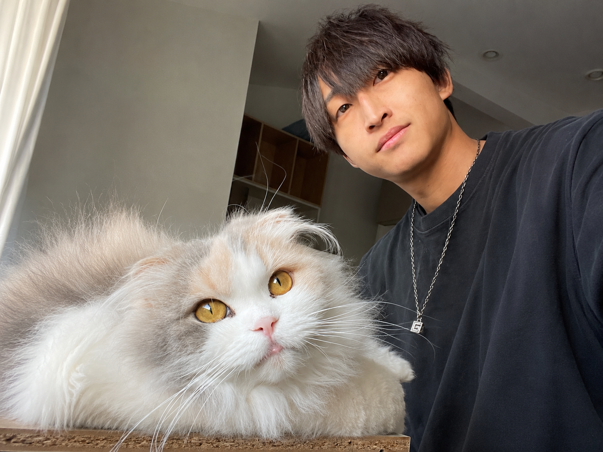

About Me.
1997年 長野県生まれ。Webクリエイターとしての歩みと、制作への想い。
Scroll

1997年、長野県生まれ。
高校時代にWebクリエイター科を専攻し、Web制作の基礎を習得しました。在校中から書いたコードが形になる楽しさに没頭する日々を過ごしました。
卒業後、知人のフリーランスエンジニアからの誘いをきっかけにプロとしてのキャリアをスタート。現場での厳しい要求に応えながら、実務における技術と知識を積み上げてきました。
現在はこれまでの経験を武器に、お客様一人ひとりの課題に寄り添い、想いを形にする制作に励んでいます。
Stance
「作って終わり」にしない。
Webサイトは公開してからが本当のスタートです。その先の運用や成果までを見据えた丁寧なヒアリングと、細部まで妥協しない制作スタンスを大切にしています。お客様のビジネスに寄り添うパートナーであることを心がけています。
Expertise
Tools
Hobby
Golf（長野の豊かな自然の中でプレーするのが一番のリフレッシュです）
Cats（写真に写っている愛猫と遊ぶ時間が日々の最高の癒やしです）
一緒に素晴らしいプロジェクトを作りませんか？
GET IN TOUCHSNSからもお気軽にお問い合わせください